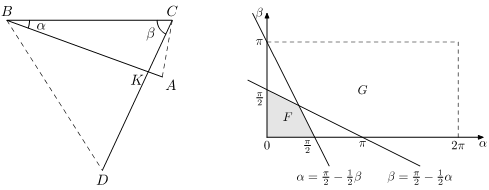

On one island, one tribe has a custom - during the ritual dance, the leader throws up three thin straight rods of the same length, connected in the likeness of the letter capital $\pi$, $\Pi$. The adjacent rods are connected by a short thread and therefore freely rotate relative to each other. The bars fall on the sand, forming a random figure. If it turns out that there is self-intersection $($the first and third bars cross$)$, then the tribe in the coming year are waiting for crop failures and all sorts of trouble. If there is no self-intersection, then the year will be successful – satisfactory and happy. Find the probability that in 2019, the rods will predict luck.
Let’s call the broken line formed by rods ABCD. Let α = $\angle ABC$ be the angle between the first link and the second, and β = $\angle BCD$ be the angle between the second and third $($see the figure on the left$)$. We can assume that $0 \leq α \leq π$ and then $0 \leq β$ 2π. Elementary outcomes are pairs $($α, β$)$. On the coordinate plane αOβ, they fill the rectangle G $($see the figure on the right$)$, and the probability of the point $($α, β$)$ falling inside some figure is proportional to the area of this figure.

The first and third links AB and CD intersect at some point K only if the ray CD lies inside the angle BCA, and the ray BA lies inside the angle CBD, that is, $0 \leq \angle BCD$ $<$ $\angle BCA$, $0 \leq \angle ABC$ $<$ $\angle CBD$.
Taking into account that the triangles ABC and CBD are isosceles, we obtain the conditions $0 \leq β < π/2 - α/2$ and $0 \leq α < π/2 - β/2$.
On the coordinate plane αOβ, these inequalities define a quadrilateral F inside the rectangle G. The probability of self-intersection is P$($F$)$ = SF/SG = 1/12. Hence, the required probability is 1 - 1/12 = 11/12.
11/12.
3 marks.